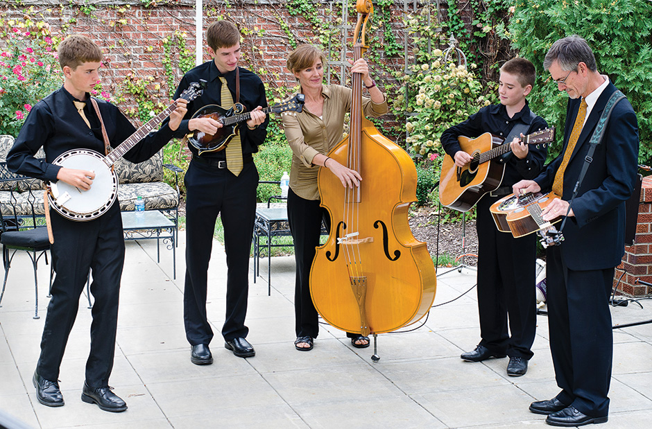

Contact:
(888) 555-GIGS


Business hour:
Mon-Fri:10:00AM-6:00PM
Sat:9:00AM-1:00pm or by appointment
My Page

I grew up in a very musical family. My father played saxophone with a ’band of buddies’ from his college days, and he is now the local high school band teacher. My mother is the singer in the family, and she is a regular lead performer in musicals with our community theater. Needless to say, my three siblings and I all took music lessons. But even though I was the one who never could settle on favorite instrument, I’m the only one who went into the musical business!
Early on, music became my thing. I could name any song on the radio and tell you not only who was it singing it, but who wrote it and when. At my senior prom, I was at the turntable more than I was on the dancefloor.
During college, I supplemented my income by DJ-ing fraternity and sorority-sponsored parties and other campus events. Eventually, I landed a job with a radio station. That was cool, but I missed being part of all the action and fun that people were having at a party rocking music. Let’s face it, being a DJ is the closest thing to being a rock star without having to play an instrument!
So, I started DJ Turntable. And I haven’t stopped spinning since. I love what I do and so will you.
-Dylan Jackson